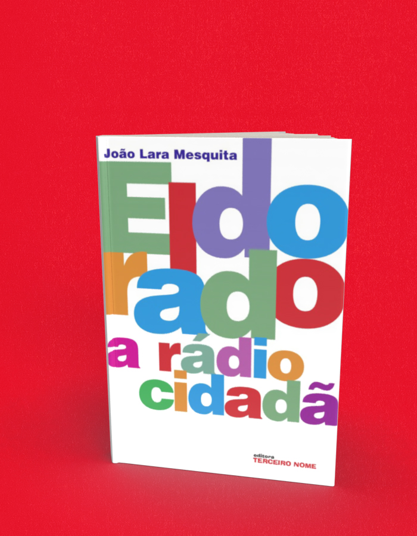

Eldorado, a rádio cidadã
A compra acontece no site da livraria, em uma nova aba. Consulte lá os preços e a disponibilidade. Procure pelo título ou ISBN deste livro.
- Autoria / créditos
- João Lara Mesquita
- ISBN
- 9788578160272
- Páginas
- 224
- Formato
- 14 x 21 cm
- Acabamento
- brochura
Sobre o livro
João Lara Mesquita é músico de formação e jornalista. Entre 1982 e 2003, dirigiu a Rádio e Estúdio Eldorado, de sua família. Neste livro, de forma coloquial, ele narra os acertos e desacertos de sua gestão na "radiozinha" do Grupo Estado, como ele carinhosamente se referia à Eldorado.
Além de Eldorado, a rádio cidadã, João Lara Mesquita publicou outros dois livros pela Terceiro Nome: O Brasil visto do Mar Sem Fim e Embarcações típicas da costa brasileira , com textos e centenas de fotos produzidas no litoral do país quando ele produziu uma série de noventa documentários sobre a costa brasileira para a TV Cultura de São Paulo.
← Voltar ao catálogo